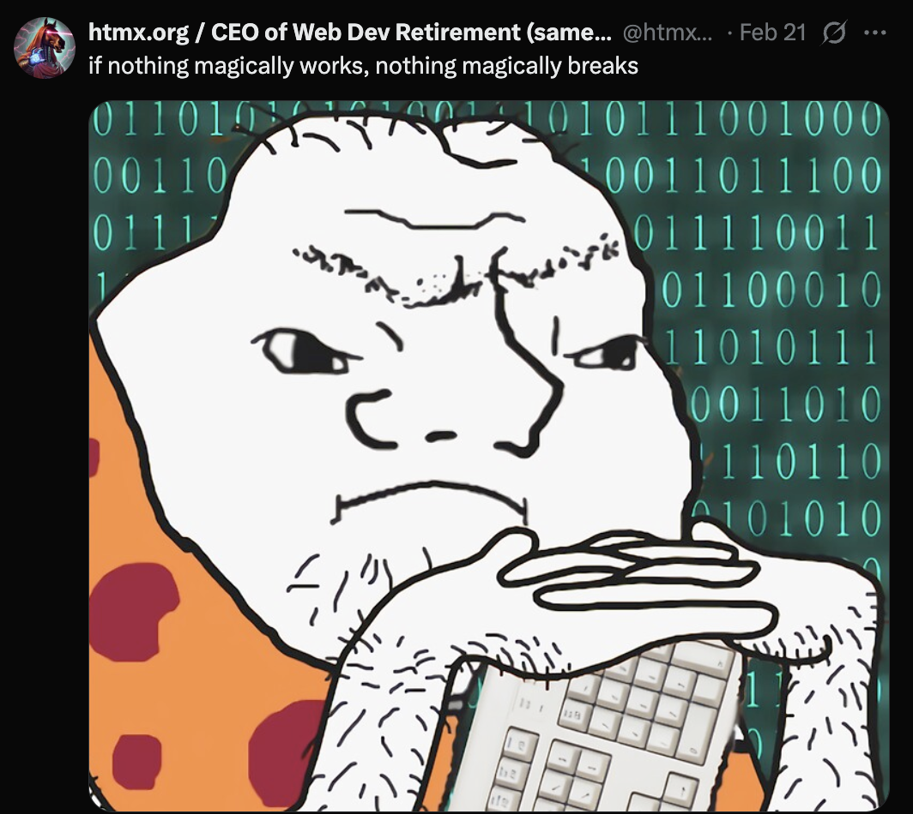

Claude 3.7 Agent Rampages, and Why Magic Isn't Always Good
I've been experimenting lately with the newest Claude 3.7 update through Cursor, and let me tell you, it's impressive—extremely impressive. The code it generates has a certain elegance and refinement that, dare I say, feels like it has taste. But here's the catch. Claude's "agent mode" sometimes acts like an overeager intern, going off on a relentless task-completing rampage.
You hand Claude a task, and instead of simply solving it, Claude eagerly takes charge, jumping from one fix to another, endlessly declaring, "Next up, this. Oh, and this too!" It keeps marching forward, determinedly fixing everything in sight, until your carefully planned project structure becomes unrecognizably tangled. Thankfully, my intermediate Python knowledge allowed me to step in and stop Claude from wreaking too much havoc. But if I hadn't caught it early, untangling its enthusiastic fixes would have been extremely annoying and time consuming.
This situation reminded me of a meme I saw once, featuring a caveman captioned, "If nothing magically works, nothing magically breaks"

(thank you to @htmx_org for this piece of art)
Profound, right? There's real wisdom here. When you deeply understand how your project works, you'll immediately know what's broken, why it's broken, and how to fix it. But when something just magically "works," without your understanding why, troubleshooting suddenly feels 10 million times harder.
This is exactly why good prompting is essential. If you have a clear vision of your project's architecture and behavior, you can guide the AI effectively, aligning its output more closely with your intentions. The more context and structure you provide, the more accurately models like Claude can predict your desired outcomes.
Despite Claude's occasional task rampages, with careful prompting, its troubleshooting capabilities can be nothing short of phenomenal. Issues that once took me days to debug now resolve themselves in just a couple of hours. Here's a prompt template I swear by when debugging (shoutout to Ted Werbel @tedx_ai for this awesome debugging prompt):
(Pro-tip: Always double-check for residual Claude-generated files afterward. Trust me.)
Above all, treat your projects like your children—know everything about them. The more intimately you understand every component, the easier you'll debug, iterate, and grow your projects. Right now, I'm knee-deep in a database barrier for a future product, studying advanced structures and learning graph databases (send help!). Don't be afraid to lean on AI as a study partner when tackling fundamentals or tricky subjects. LLMs aren't just for generating code; providing context about your project while studying can significantly clarify concepts and accelerate your understanding.
Old me would've plowed through blindly, relying heavily on AI to patch things up as I went along. But now, a slightly wiser Jack knows that slowing down and mastering fundamentals, especially at critical structural points, pays off enormously. Sure, it may feel slower in the beginning, but future me will be endlessly grateful for the solid foundation. Because remember: If nothing magically works, nothing magically breaks.